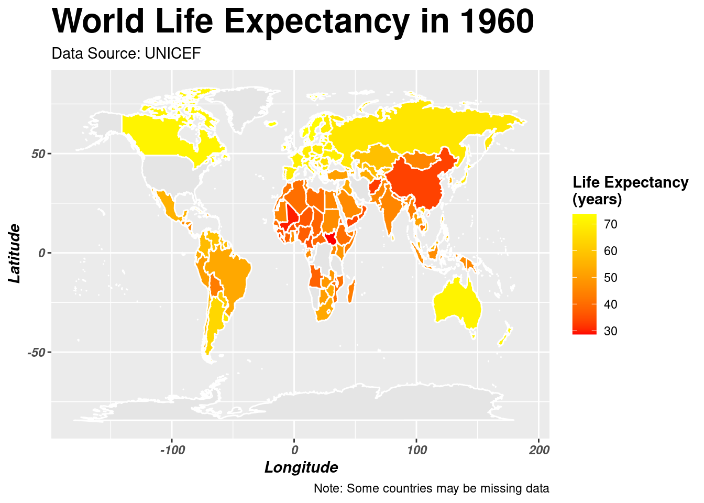
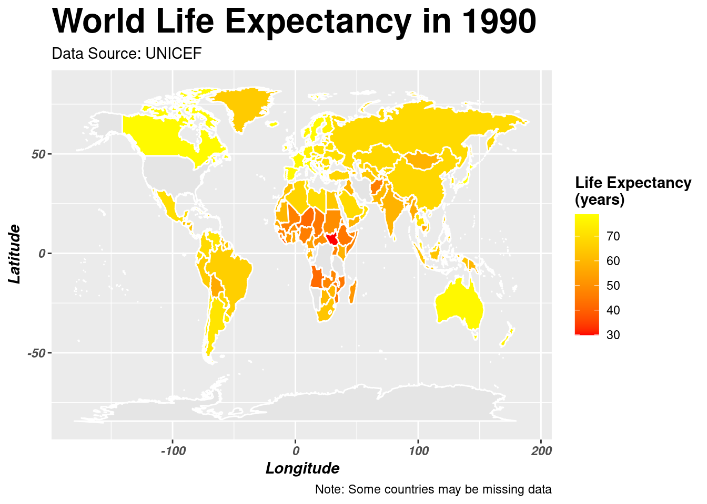
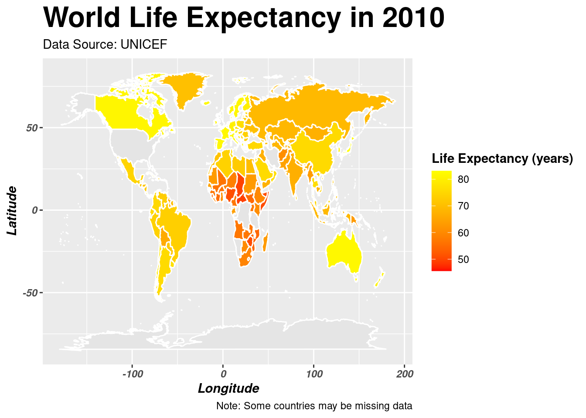

Unveiling the Intersection of Economics, Politics, and Health - A BREATH Taking Analysis
Exploring the Intersection of Economic Variables, Life Expectancy, and Children seeking Medical Treatment between countries both in and out of Conflict
Introduction : The Calm Before the Storm
Exploring Life Expectancy across the Globe


Chapter 2: Breathing Life Into Data
Exploring the % of Children in both war conflicted and non war conflicted countries who seek Medical Treatment for ARI symptoms

Chapter 3: Political Respiration; Unveiling the Governments True BREATH on Children’s Health
Exploring Economic Variables of Inflation and Military Expenditure to delve deeper into state actions…
Double Click on a Country in the Legend to Isolate that country. The exploration of inflation in conflicted countries compared to non-conflicted countries unveils intriguing insights into economic dynamics amidst socio-political turbulence. In conflicted nations, where geopolitical instability often reigns, the trajectory of inflation can be volatile and erratic, influenced by factors such as fluctuating supply chains, currency devaluation, and heightened uncertainty. Conversely, in non-conflicted countries, where economic environments are relatively stable, inflation tends to follow more predictable patterns, often driven by standard macroeconomic factors like monetary policy and market demand. By juxtaposing these trends, analysts gain a deeper understanding of the nuanced interplay between conflict, governance, and economic indicators, shedding light on the resilience and vulnerabilities of different economies in the face of geopolitical upheaval. However we see unexpected outcomes due to the fact many of these countries whether in conflict or not are developing during this period.
Double click the Country in the Legend to Isolate that Country. The analysis of time series data on military expenditure unveils a striking pattern: conflicted countries consistently allocate a larger proportion of their resources towards military spending compared to their non-conflicted counterparts. This trend is vividly depicted in the graph, where the curves representing military expenditure for conflicted nations notably surpass those of their non-conflicted counterparts. Such disproportionate investment in military endeavors raises pertinent concerns regarding resource allocation and its implications for essential social services, particularly healthcare for children. The substantial diversion of funds towards military ventures may potentially hinder the allocation of resources to vital healthcare infrastructure, thereby exacerbating the challenges faced by children seeking medical attention. By scrutinizing these trends, policymakers gain critical insights into the trade-offs between defense spending and public welfare, facilitating informed decision-making aimed at achieving a more equitable distribution of resources for the well-being of vulnerable populations.
Chapter 4: ECONOMIC PULSES; INHALING PERSPECTIVES, EXHALING OPPORTUNITIES
A closer examination of the intrinsic relationship between GDP and life Expectancy of the chosen Dataset
Hover over a point on the Scatterplot to see; Country, Year and GDP and Life Expectancy for that year. The scatterplot analysis conducted for the years 1960, 1980, 2000, and 2010 offers valuable insights into the economic disparities between conflicted and non-conflicted countries. By comparing GDP and life expectancy data for these pivotal years, discernible patterns emerge, shedding light on the potential economic determinants influencing healthcare-seeking behaviors among children with acute respiratory infection symptoms (ARI). Conflicted nations often exhibit fluctuating GDP trajectories alongside varying life expectancy rates, indicative of the profound impact of socio-political turmoil on economic stability and public health outcomes. Conversely, non-conflicted countries tend to showcase more consistent GDP growth patterns and higher life expectancy averages, reflecting the resilience of their economic and healthcare systems amidst relative stability. While this is not the case for all countries it can be seen from countries on the lower end of the scatter plot are the conflicted countries whereas the ones at the top are those not in conflict. Through this comparative analysis, researchers can gain a deeper understanding of the intricate interplay between economic dynamics and healthcare accessibility, thus paving the way for informed interventions aimed at addressing disparities in healthcare-seeking behaviors among vulnerable populations affected by conflict.
Conclusion
The exploration of economic variables, health outcomes, and socio-political contexts across conflicted and non-conflicted countries reveals a complex tapestry of interconnected factors shaping global well-being. From disparities in life expectancy to divergent trends in healthcare-seeking behaviors among children, our analysis underscores the profound impact of geopolitical instability on public health dynamics. Conflicted nations, grappling with ongoing turmoil, often exhibit lower life expectancy rates and erratic healthcare-seeking patterns, reflecting the multifaceted challenges faced by vulnerable populations in accessing essential medical services. Conversely, non-conflicted countries, characterized by relative stability, demonstrate more consistent health outcomes and healthcare accessibility, indicative of the resilience of their social and economic systems. However, amidst these trends, it’s essential to recognize the nuanced interplay between economic development, political governance, and public health, highlighting the need for targeted interventions aimed at addressing disparities and fostering equitable health outcomes for all. By unraveling these complexities, our analysis offers valuable insights into the intricate relationship between economics, politics, and health, paving the way for informed policymaking and interventions geared towards promoting global health equity and resilience.